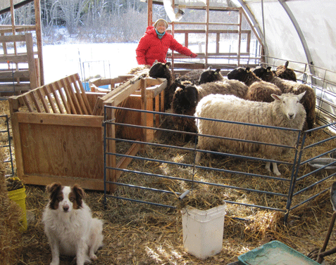
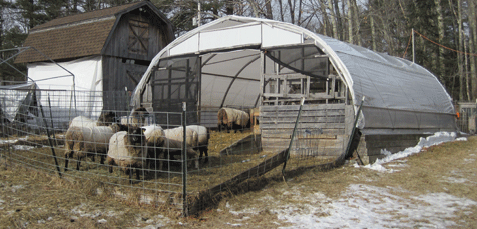
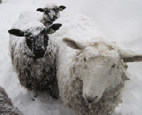
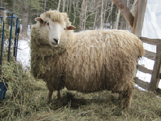
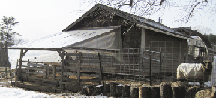
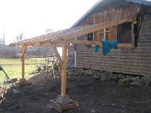

|  | Winter Winter is a quiet time. Also, a time of waiting… for spring shearing, April lambs and spring grass. Its a wonderful opportunity to spend close-up time with the sheep. When the sheep are out grazing in the pasture they are focused on eating! Sheep are hardy, but need access to shelter during winter snow, rain and wind storms. The greenhouse barn provides shelter with plenty of ventilation and light. Attached to the 24’ x 21’ greenhouse barn is a 16’ x 16’ fenced paddock where the ewes can be outside in good weather. In mid-November, Angelo the ram is introduced to the ewes to be bred. The ram is with the ewes for 32 days (two, seventeen--day cycles.) Gestation is five months, with lambs arriving in mid-April when the grass is beginning to grow. Fresh grass is essential for the lactating ewes, so they have plenty of nutritious milk for their lambs. The ram is “half the flock,” so it is important he is healthy and well-bred. I use mature rams for breeding, so I can see and judge their body conformation and fleece. They are also large enough to get the job done. Ram lambs are usually too small, especially for larger ewes. |
|||||||||||
|  | ||||||||||||
|  |  | |||||||||||
| Rams and ram lambs are kept separate from the ewes, so there is no unplanned breeding of the ewes.
Rams have their own outdoor area, and a lean-to shelter attached to the east side of one of the small hay sheds. It gives them a barrier from strong west winds. Covered with greenhouse plastic, it is full of light, yet provides protection from winter winds, snow and rain. Plastic sides can be lowered in severe weather or kept open for ventilation. |
||||||||||||
| Both sheep shelters use a deep wood chip base with straw bedding on top. Manure is removed one to two times a day and put on a composat pile. When the bedding straw becomes damp from rain and urine it is removed and new dry straw spread. |  | |||||||||||
| Simple 2x4 framing with supporting posts made this fast to build. Boards added along the bottom front keep the deep wood chip base and straw bedding flat on the slight slope. A snow rake is used to remove heavy snow. Most snow slides off by gently pushing the plastic from inside the shelter. |  | |||||||||||